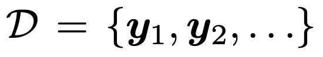
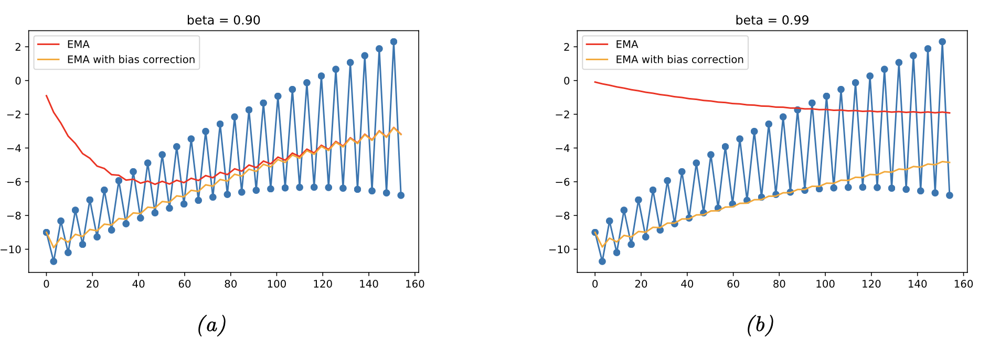
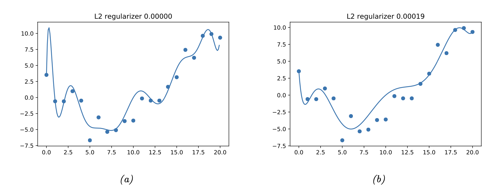
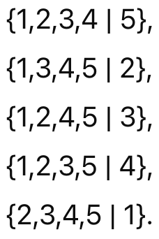

Ch4 Statistics - Other Estimation Methods - MAP, Regularization
지난시간 Maximum Likelihood Estimatino (MLE)에 대해서 다루었고,
이번시간에는 그 변형 혹은 다른 methods에 대해서 알아보자.
1. the method of moments.


2. Recursive Estimation.
이번에는 실시간으로 데이터가 계속 추가되는 상황을 생각해보자.
(시간 = index라 생각하자 1초마다 새로운 데이터 추가)

Set of Data, y1, y2 ... yt.
시간 (t-1)까지, 누적된 데이터 집합, D1:(t-1)
D1:(t-1)까지 데이터를 가지고 예측한 파라메터를 다음과 같이 정의하자.

그랬을때, 우리가 Gaussian Distribution을 사용한다고 가정하면,
t일때는 데이터 yt가 기존데이터(
D1:(t-1)
에서 추가 되는 것을 알 수 있다.

Gaussian mean
이때, 기존 데이터를 모두 읽을 필요가 없이, 기존에 예측하던 mean u(t-1)을 가지고 업데이트를 할 수 있다.

즉, 우리는 기존데이터를 모두 저장할 필요가 없다는 아주 큰 장점.
expotentially weighted moving average
여기서 우리는 새로 추가된 데이터로 mean을 update할때,
새로 추가된 data의 정보를 ratio로 업데이트를 해줄 수 있다.

Recursive function 이기 때문에, 등비수열꼴이므로 전개를 해주면,

즉, 맨 마지막의 데이터가 가장 현재 mean에 영향을 많이 주고,
시간이 지날수록 과거 데이터의 영향이 줄어드는 것을 알 수 있다.
그래프로 이해해보자.

이론상, beta가 작은 (a)의 경우가 빠르게 작은 과거값을 잊고 더 높은 값을 띄어야 한다.
However, without bias(빨간색)선 of (a)는
그렇지 않는 것을 알 수 있다.
이는 초기값 = 0 에서 시작하고, 이 값이 영향을 주기 때문이다.
따라서, 우리는 bias term을 추가해서 초기값이 0 에서 시작하지 않도록 조정해주자.

include the bias term
Regularization (Penalty)
우리가 지금 무엇을 하고 있는지를 잠깐 짚고 넘아가자.
주어진 data set(D)를 가지고 output 을 가장 잘 예측하는 모델을 만들려고 한다.
Set of Data, y1, y2 ... yt.
model을 구성하는 파라메터를
θ
라고 정의하고,
P(D|
θ
)를 가장 극대화하는
θ
를 찾는 문제로 전환하였다.
이를 수학적으로 표현하면, 아래 Likelihood를 가장 최대로 하는
θ를 찾고, MLE라고 정의하자.

하지만, 이렇게 하다보면 주어진 데이터에만 잘 맞는 overfitting 문제가 발생할 수 있다.
이를 해결하기 위한 솔루션이 바로
Regularization
논리는 penalty Term 을 Log-Likelihood function에 추가해주는 것.

λ: Regularization Parameter
C(θ) : Complexity Penalty.
(페널티라는 단어를 꼭 기억하자)
예를들어서, C(
θ) = log [ p( θ) ] 라고 가정하자.

λ = 1/N으로 설정하면 log liklihood를 다음과 같이 바꾸어 표현가능하다.

즉, bayes rule을 통해서 p(θ|D) Posterior probability를 극대화하는 문제로 전환됨을 알 수 있다.

in other words, Maximum a posterior estimation (MAP)문제
= MLE +Penalty(Prior)
MLE에 패널티가 추가된 것,
그리고 그 패널티가 바로 Prior
prior이외에 다른 penalty 부과 방식은 weight Decay

weight size가 커지지 않도록 만들어 주는 방법도 존재한다.
아주 간단한 예시로 이차원 점들을 잇는 polynomial model을 만들때,
차수를 키우게 되면 (a)처럼 MSE가 더 작은 모델을 만들 수 있다.
(하지만 Overfitting일 확률이 굉장히 높다)

lambda - L2 regularizer
lambda ( 0 -> 0.00019)로 정규화장치를 켜주면,
weight의 크기를 반영하게 되어, 차수를 더 적게 사용하는 모델을 만들어낸다.
그렇다면, 여기서 드는 질문은.
그렇다면 어떻게 적절한 Lambda - L2 regularizer를 설정할까?
1. Validation Set
원리는 생각보다 간단하다, 일단 dataset을 train, valid두개로 쪼개주자.(랜덤하게)
D =. D_train +. D_valid
최적의
lambda
를 찾을 때까지.
밑의 block을 반복해줄 것.
=================================================================================
[Block]
D_train -> Dataset으로 계산하자:
Regularized Empirical Risk (MAP at given D_train)

그리고 미분을 통해서 stagnation point를
theata
를 찾자.
(위 R을 가장 작게하는 theata 찾기)

이제, 방금 구한
theat를 사용하고, D_valid 를 가지고
Regularized Empirical Risk (MAP at given D_valid) 를 구하자.

=================================================================================
우리가 해야할 것은,
위 Block을 계속해서 반복하면서, 최적의 lambda를 찾는 것

그리고, 그떄 최적의 lambda를 구하면 그것을 기준으로의 theat를 구하면 완성된다.

2. Cross Validation
위 방법은 Dataset을 쪼개야하는 단점이 존재한다.
즉, dataset자체의 수가 많지 않으면, 그것보다 작은 train dataset은 굉장히 더 작다는 것.
따라서, 우리는 하나의 dataset에서 여러개의 train |valid split을 진행하는 cross validation 방법을 주로 사용.
먼저 Dataset을 K개의 fold로 분할한다.
예를들어서, K = 5로 데이터를 분할하고, 분할한 집합에 1,2,3,4,5 라벨을 붙혀줬다고 해보자.
여기서 80%를 Train에 사용한다고 했을때, 나올 수 있는 train|valid set집합은 5가지이다.

즉 우리는 위 5개에 대해서,
(방금 전에 배운 Validation Set)
과정을 진행해 주어서, 총 5개의
Regularized Empirical Risk을구한다.

Definition of Regularized Empirical Risk, D-k: (total dataset - Dk)
만야게 이렇게 구한 R = {0.1, 0.01, 0.5, 0.001, 0.3} 이라면,
4번째 집합의 lambda를 최적의 lambda로 선택하는 것.